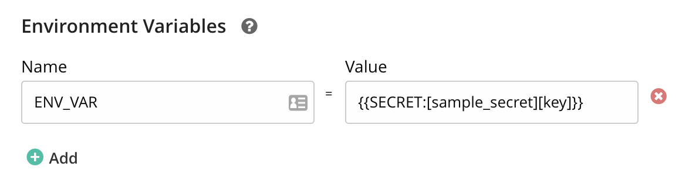

Secrets Management
Managing secrets is hard, ideally secrets should be stored securely, secrets need to have tight access controls and should be rotated on a regular interval. There are Secret Managers in the market which specialize in solving some of these problems around handling secrets. Leveraging these solutions, GoCD provides plugin endpoints to lookup for secrets defined in an external Secrets Manager. This gives GoCD users the flexibilty to use a Secret Manager of their choice to store and manage secrets.
At no point the external secrets are stored in GoCD, these secrets are looked up only when required, e.g if a job is configured to use external secrets, these secrets are looked up just before the job is assigned to an agent and transmitted securely to the agent.
How to use external secrets in GoCD
Step 1 - Install a Secrets Plugin
To look up for secrets from an external Secrets Manager you would need to install a Secrets Plugin which supports a Secret Manager of your choice. A list of available Secrets Plugins can be found here.
GoCD comes bundled with a Secrets Plugin which encrypts and stores secrets on a file. For more information about the File based Secrets Plugin please refer to the documentation.
Step 2 - Configure a Secret Manager
A Secret Manager should be configured to lookup for secrets. A Secret Manager can be configured using the Secret Configuration, this configuration is specific to a plugin and would differ based on the plugin used.
Steps to configure a Secrets Manager, the below example uses the bundled File based Secrets Plugin,
Login into your GoCD server.
Go to Admin menu → Secret Management.

Click on
Addbutton.
Enter a unique id for secret configuration. This id will be referred in GoCD configurations while using the secrets.
In the Plugin dropdown select the plugin which supports a Secret Manager of your choice. Once a plugin is selected an appropriate configuration is displayed below.
Provide the path to the secrets file on the GoCD server.
The secrets file plugin’s documentation has information about how to generate a secret file and manage secrets.

Step 3 - Restrict usage of Secrets Manager
There can be cases wherein Admins might want to restrict the usage of Secret Manager or the secrets defined within a Secrets Manager. E.g restrict usage of production secrets to a specific pipeline or environment. GoCD allows Admins to control usage of a Secret Manager through Allow or Deny rules. Rules define strict access control for a Secrets Manager.
Users can define two types of rules
Allow- Explicitly allows usage of the Secret Manager to a GoCD entity.
<allow type="pipeline_group" action="refer">my_first_pipeline</allow>Deny- Explicitly denies usage of the Secret Manager to a GoCD entity.
<deny type="environment" action="refer">resource_identifier</allow>
The rules have the following attributes,
| Attribute | Description |
|---|---|
| type | This attribute represents the type of GoCD config entity, can be either pipeline_group or environment. To represent any entity type use the wildcard (*). |
| action | This attribute represents the allowed action on the Secret Configuration, currently the only allowed action is refer. |
| resource | The name of resource. Should be the name of a pipeline_group or environment since they are the only supported values for the type attribute. |
By default if no rule is defined, none of the GoCD entities will have access to the Secret Manager. Hence the Secret Manager would be unusable.

Step 4 - Define Secret Params
Once a Secret Manager is configured, you will have to define a Secret Param to lookup for a secret from an external Secrets Manager.
The syntax of a Secret Param is: {{SECRET:[secret_config_id][secret_key]}} where,
secret_config_id: is the unique id provided while creating secret configuration.secret_key: is the key which refers to a secret value stored in your external Secrets Manager.
Add a Secret Param
Currently, GoCD allows Secret Params to be added in the following places,
Password field for an SCM Material

Value field of an environment variable.

Secret Params defined anywhere else other than the above would be ignored and treated as a string.
Secret Param resolution
Secrets from an external Secrets Manager are never stored in GoCD, hence the Secret Params are resolved just before they are required.
- Secret Params defined as a password in a SCM Material are resolved just before a Material is picked up for an update.
- Secret Params defined as an environment variable is resolved before assigning work to an agent.
If a Secret Param resolution fails the corresponding task would fail as well. This can lead to a failed job or a failed material update.
More about Rules
A restrictive model is followed while accessing a Secrets Manager. In the absence of a rule, a Secret Manager is inaccessible by default.
The secret config defined in the example cannot be referred by any entity in GoCD.
<secretConfig id='teamA_secrets' pluginId='vault_based_plugin'> <description>All secrets for env1</description> <configuration> ... </configuration> <rules/> </secretConfig>Wildcards (*) in type:
Using a wildcard (*) for type implies a given rule applies to all entity types. In this case, the supported entities are
pipeline_groupandenvironment.In the given example, a Secret Configuration can be referred by any
pipeline_grouporenvironmentwith the nameproduction.<rules> <allow type="*" action="refer">production</allow> </rules>Note:
typecan have a wildcard(*) but it will not support pattern matching e.g.pipe*.Wildcards (*) in action:
Using a wildcard (*) for action implies a given rule applies to any action on the Secret Config. Currently
referis the only supported action.Note:
actioncan have a wildcard(*) but it will not support pattern matching e.g.ref*.Wildcards (*) in resource:
Resource name supports the wildcard characters ‘?’ and ‘*’ to represent a single or multiple (zero or more) wildcard characters.
Wildcard Matcher Resource names *_groupMatches my_groupandsomeother_group, but nottestgrouporgroup1.Production_*Matches Production_Team_AandProduction_Team_Bbut notTeam_ABC_Production_D.*group*Matches group,my_groupandgroup_A, but notgroABCup.Team_?_groupMatches Team_A_group,Team_B_groupbut notTeam_ABC_grouporTeam__group.When multiple rules are defined, rules will be applied from top to bottom.
In the below example pipeline_group
my_groupcannot refer the secret_config since the first rule denies access using the patternmy_*<rules> <deny action="refer" type="pipeline_group">my_*</deny> <allow action="refer" type="pipeline_group">my_group</allow> </rules>In the below example pipeline_group
my_groupcan refer the secret_config since the first rule allows access.<rules> <allow action="refer" type="pipeline_group">my_group</allow> <deny action="refer" type="pipeline_group">*</deny> </rules>Rules are applied during secret lookup. If an entity does not have the required permission to access the Secret Manager, the lookup will fail. A failed lookup results in a failed job or a failed material update based on where the secret param is defined.
 Suggest edits to this page
Suggest edits to this page